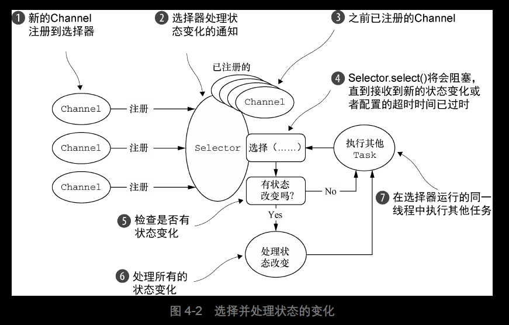
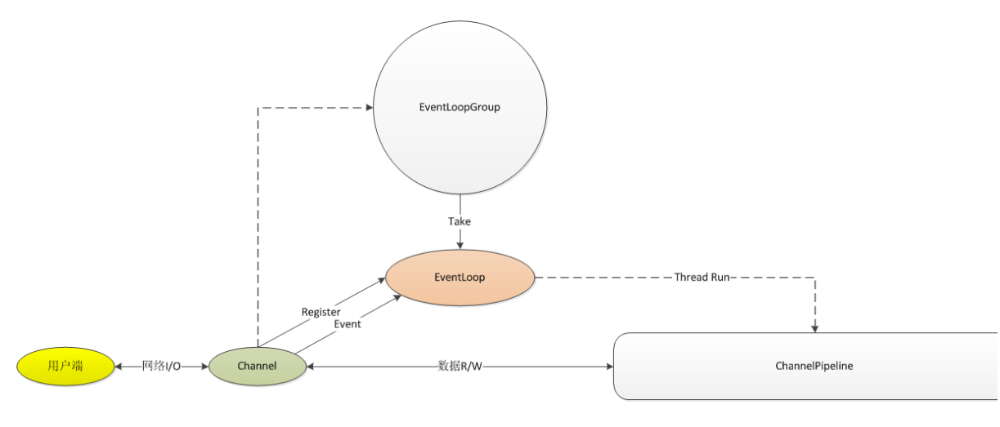
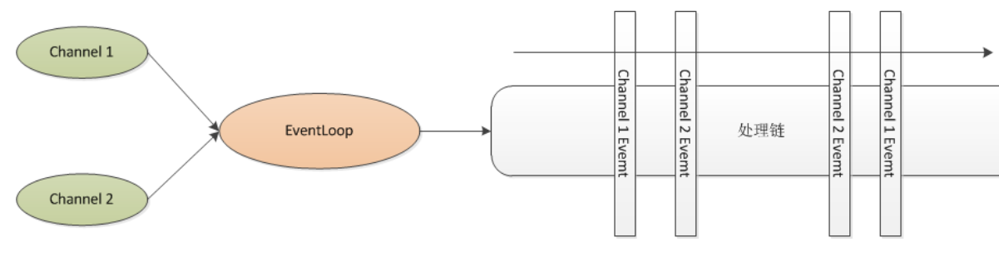
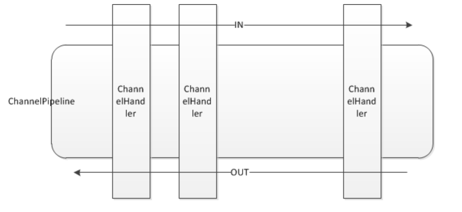
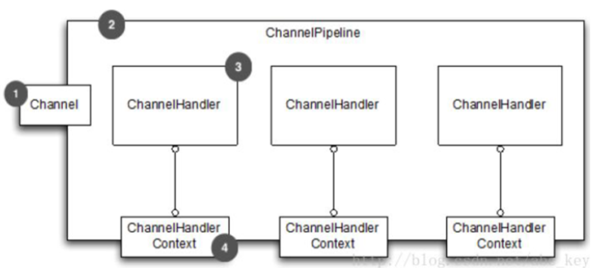
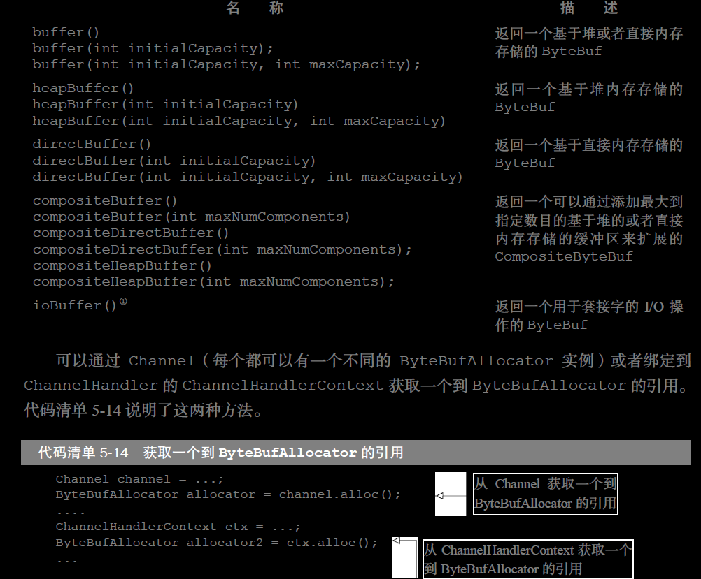
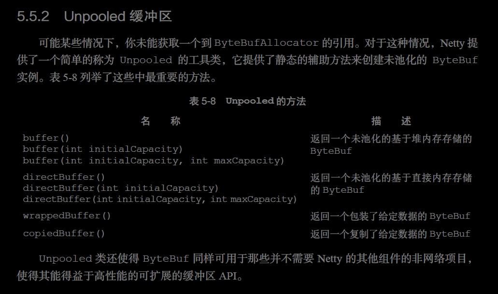
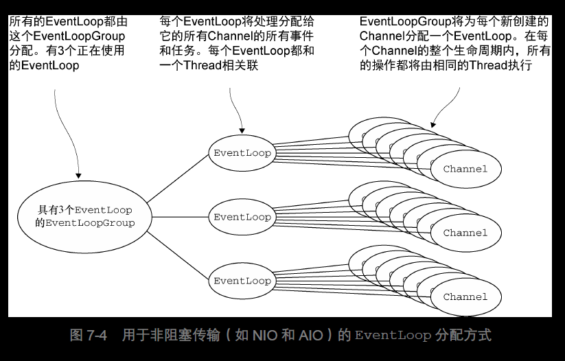

<!DOCTYPE html>


  <html class="light page-post">


<head><meta name="generator" content="Hexo 3.8.0">
  <meta charset="utf-8">
  
  <title>netty笔记 | 胡思旺</title>

  <meta name="viewport" content="width=device-width, initial-scale=1, maximum-scale=1">

  
    <meta name="keywords" content="全栈,微服务,Java,Netty,Vue,机器学习,Python">
  

  <meta name="description" content="netty  netty由JBOSS提供的一个Java开源框架    提供异步的、事件驱动的网络应用程序框架和工具    快速开发高性能、高可靠性的网络服务器和客户端程序    Netty是一个基于NIO的客户、服务器端编程框架    提供了多种协议的编解码包括HTTP、二进制和Google Protobuf等等，它们通过Codec Framework进行整合    demo例程    学习网站">
<meta property="og:type" content="article">
<meta property="og:title" content="netty笔记">
<meta property="og:url" content="http://yoursite.com/2018/10/31/netty笔记/index.html">
<meta property="og:site_name" content="胡思旺">
<meta property="og:description" content="netty  netty由JBOSS提供的一个Java开源框架    提供异步的、事件驱动的网络应用程序框架和工具    快速开发高性能、高可靠性的网络服务器和客户端程序    Netty是一个基于NIO的客户、服务器端编程框架    提供了多种协议的编解码包括HTTP、二进制和Google Protobuf等等，它们通过Codec Framework进行整合    demo例程    学习网站">
<meta property="og:locale" content="default">
<meta property="og:image" content="http://yoursite.com/2018/10/31/netty笔记/netty6.PNG">
<meta property="og:image" content="http://yoursite.com/2018/10/31/netty笔记/netty1.PNG">
<meta property="og:image" content="http://yoursite.com/2018/10/31/netty笔记/netty2.PNG">
<meta property="og:image" content="http://yoursite.com/2018/10/31/netty笔记/netty3.PNG">
<meta property="og:image" content="http://yoursite.com/2018/10/31/netty笔记/netty4.PNG">
<meta property="og:image" content="http://yoursite.com/2018/10/31/netty笔记/netty7.PNG">
<meta property="og:image" content="http://yoursite.com/2018/10/31/netty笔记/netty8.PNG">
<meta property="og:image" content="http://yoursite.com/2018/10/31/netty笔记/netty5.PNG">
<meta property="og:updated_time" content="2018-10-31T08:54:22.587Z">
<meta name="twitter:card" content="summary">
<meta name="twitter:title" content="netty笔记">
<meta name="twitter:description" content="netty  netty由JBOSS提供的一个Java开源框架    提供异步的、事件驱动的网络应用程序框架和工具    快速开发高性能、高可靠性的网络服务器和客户端程序    Netty是一个基于NIO的客户、服务器端编程框架    提供了多种协议的编解码包括HTTP、二进制和Google Protobuf等等，它们通过Codec Framework进行整合    demo例程    学习网站">
<meta name="twitter:image" content="http://yoursite.com/2018/10/31/netty笔记/netty6.PNG">

  

  
    <link rel="icon" href="/favicon.ico">
  

  <link href="/css/styles.css?v=c114cben" rel="stylesheet">


  
    <link rel="stylesheet" href="/css/personal-style.css">
  

  

  
  <script type="text/javascript">
    var _hmt = _hmt || [];
    (function() {
      var hm = document.createElement("script");
      hm.src = "//hm.baidu.com/hm.js?57e94d016e201fba3603a8a2b0263af0";
      var s = document.getElementsByTagName("script")[0];
      s.parentNode.insertBefore(hm, s);
    })();
  </script>


  
  <script type="text/javascript">
	(function(){
	    var bp = document.createElement('script');
	    var curProtocol = window.location.protocol.split(':')[0];
	    if (curProtocol === 'https') {
	        bp.src = 'https://zz.bdstatic.com/linksubmit/push.js';        
	    }
	    else {
	        bp.src = 'http://push.zhanzhang.baidu.com/push.js';
	    }
	    var s = document.getElementsByTagName("script")[0];
	    s.parentNode.insertBefore(bp, s);
	})();
  </script>


  

</head>
</html>
<body>


  
    <span id="toolbox-mobile" class="toolbox-mobile">盒子</span>
  

  <div class="post-header CENTER">
   
  <div class="toolbox">
    <a class="toolbox-entry" href="/">
      <span class="toolbox-entry-text">盒子</span>
      <i class="icon-angle-down"></i>
      <i class="icon-home"></i>
    </a>
    <ul class="list-toolbox">
      
        <li class="item-toolbox">
          <a class="CIRCLE" href="/archives/" rel="noopener noreferrer" target="_self">
            博客
          </a>
        </li>
      
        <li class="item-toolbox">
          <a class="CIRCLE" href="/project/" rel="noopener noreferrer" target="_self">
            项目
          </a>
        </li>
      
        <li class="item-toolbox">
          <a class="CIRCLE" href="/about/" rel="noopener noreferrer" target="_self">
            关于
          </a>
        </li>
      
    </ul>
  </div>


</div>


  <div id="toc" class="toc-article">
    <strong class="toc-title">文章目录</strong>
    <ol class="toc"><li class="toc-item toc-level-2"><a class="toc-link" href="#netty"><span class="toc-text">netty</span></a></li><li class="toc-item toc-level-2"><a class="toc-link" href="#NIO"><span class="toc-text">NIO</span></a></li><li class="toc-item toc-level-2"><a class="toc-link" href="#Channel"><span class="toc-text">Channel</span></a></li><li class="toc-item toc-level-2"><a class="toc-link" href="#ChannelPipeline和ChannelHandler"><span class="toc-text">ChannelPipeline和ChannelHandler</span></a></li><li class="toc-item toc-level-2"><a class="toc-link" href="#ChannelHandlerContext"><span class="toc-text">ChannelHandlerContext</span></a></li><li class="toc-item toc-level-2"><a class="toc-link" href="#ByteBuffer"><span class="toc-text">ByteBuffer</span></a></li><li class="toc-item toc-level-2"><a class="toc-link" href="#EventLoop和EventLoopGroup"><span class="toc-text">EventLoop和EventLoopGroup</span></a></li><li class="toc-item toc-level-2"><a class="toc-link" href="#业务代码"><span class="toc-text">业务代码</span></a></li></ol>
  </div>


<div class="content content-post CENTER">
   <article id="post-netty笔记" class="article article-type-post" itemprop="blogPost">
  <header class="article-header">
    <h1 class="post-title">netty笔记</h1>

    <div class="article-meta">
      <span>
        <i class="icon-calendar"></i>
        <span>2018.10.31</span>
      </span>

      
        <span class="article-author">
          <i class="icon-user"></i>
          <span>siwang.hu</span>
        </span>
      

      


      
        <span>
          <i class="icon-comment"></i>
          <a href="http://www.github.com/siwanghu/2018/10/31/netty笔记/#disqus_thread"></a>
        </span>
      

      
      
    </div>
  </header>

  <div class="article-content">
    
      <h2 id="netty"><a href="#netty" class="headerlink" title="netty"></a>netty</h2><blockquote>
<ul>
<li><p>netty由JBOSS提供的一个Java开源框架  </p>
</li>
<li><p>提供异步的、事件驱动的网络应用程序框架和工具  </p>
</li>
<li><p>快速开发高性能、高可靠性的网络服务器和客户端程序  </p>
</li>
<li><p>Netty是一个基于NIO的客户、服务器端编程框架  </p>
</li>
<li><p>提供了多种协议的编解码包括HTTP、二进制和Google Protobuf等等，它们通过Codec Framework进行整合  </p>
</li>
<li><p><a href="https://github.com/siwanghu/Netty" target="_blank" rel="noopener">demo例程</a>  </p>
</li>
<li><p><a href="https://waylau.com/netty-4-user-guide/Preface/The%20Problem.html" target="_blank" rel="noopener">学习网站</a>  </p>
</li>
<li><p><a href="https://sylvanassun.github.io/2017/11/30/2017-11-30-netty_introduction/" target="_blank" rel="noopener">学习资料</a>  </p>
</li>
</ul>
</blockquote>
<h2 id="NIO"><a href="#NIO" class="headerlink" title="NIO"></a>NIO</h2><blockquote>
<p>NIO 提供了一个所有I/O 操作的全异步的实现。它利用了自NIO 子系统被引入JDK 1.4 时便<br>可用的基于选择器的API。选择器背后的基本概念是充当一个注册表，在那里你将可以请求在Channel 的状态发生变化时得到通知。可能的状态变化有：  </p>
<ul>
<li>新的Channel 已被接受并且就绪OP_ACCEPT  </li>
<li>Channel 连接已经完成OP_CONNECT  </li>
<li>Channel 有已经就绪的可供读取的数据OP_READ  </li>
<li>Channel 可用于写数据OP_WRITE  </li>
</ul>
<p>  </p>
</blockquote>
<h2 id="Channel"><a href="#Channel" class="headerlink" title="Channel"></a>Channel</h2><blockquote>
<p>  </p>
<p>Channel是Netty的核心概念之一，它是Netty网络通信的主体，由它负责同对端进行网络通信、注册和数据操作等功能  </p>
<ul>
<li><p>一旦用户端连接成功，将新建一个channel同该用户端进行绑定  </p>
</li>
<li><p>channel从EventLoopGroup获得一个EventLoop，并注册到该EventLoop，channel生命周期内都和该EventLoop在一起（注册时获得selectionKey）  </p>
</li>
<li><p>channel同用户端进行网络连接、关闭和读写，生成相对应的event（改变selectinKey信息），触发eventloop调度线程进行执行  </p>
</li>
<li><p>如果是读事件，执行线程调度pipeline来处理用户业务逻辑  </p>
</li>
</ul>
<p>多个channel可以注册到一个eventloop上，所有的操作都是顺序执行的，eventloop会依据channel的事件调用channel的方法进行相关操作，每个channel的操作和处理在eventloop中都是顺序的  </p>
<p>  </p>
</blockquote>
<h2 id="ChannelPipeline和ChannelHandler"><a href="#ChannelPipeline和ChannelHandler" class="headerlink" title="ChannelPipeline和ChannelHandler"></a>ChannelPipeline和ChannelHandler</h2><blockquote>
<ul>
<li><p>ChannelPipeline和ChannelHandler用于channel事件的拦截和处理  </p>
</li>
<li><p>Netty使用类似责任链的模式来设计ChannelPipeline和ChannelHandler  </p>
</li>
<li><p>ChannelPipeline相当于ChannelHandler的容器，channel事件消息在ChannelPipeline中流动和传播，相应的事件能够被ChannelHandler拦截处理、传递、忽略或者终止  </p>
</li>
</ul>
<p>  </p>
<ul>
<li>inbound:当发生某个I/O操作时由IO线程流向用户业务处理线程的事件，如链路建立、链路关闭或者读完成等  </li>
<li>outbound:由用户线程或者代码发起的IO操作事件  </li>
</ul>
</blockquote>
<h2 id="ChannelHandlerContext"><a href="#ChannelHandlerContext" class="headerlink" title="ChannelHandlerContext"></a>ChannelHandlerContext</h2><blockquote>
<ul>
<li><p>每个ChannelHandler 被添加到ChannelPipeline 后，都会创建一个ChannelHandlerContext 并与之创建的ChannelHandler 关联绑定  </p>
</li>
<li><p>ChannelHandler通过ChannelHandlerContext来操作channel和channelpipeline  </p>
</li>
</ul>
<p>  </p>
<ul>
<li><p>ChannelHandler负责I/O事件或者I/O操作进行拦截和处理，用户可以通过ChannelHandlerAdapter来选择性的实现自己感兴趣的事件拦截和处理  </p>
</li>
<li><p>由于Channel只负责实际的I/O操作，因此数据的编解码和实际处理都需要通过ChannelHandler进行处理  </p>
</li>
<li><p><a href="https://blog.csdn.net/yinbucheng/article/details/77053692" target="_blank" rel="noopener">参考例程</a>  </p>
</li>
<li><p>ChannelPipeline是线程安全的，多个业务线程可以并发的操作ChannelPipeline；ChannelHandler不是线程安全的，用户需要自己保重ChannelHandler的线程安全  </p>
</li>
</ul>
</blockquote>
<h2 id="ByteBuffer"><a href="#ByteBuffer" class="headerlink" title="ByteBuffer"></a>ByteBuffer</h2><blockquote>
<ul>
<li><p>在Netty中并没有使用Java自带的ByteBuffer,而是自己实现提供了一个缓存区来用于标识一个字节序列，并帮助用户操作原始字节或者自定义的POJO  </p>
</li>
<li><p>channel与对端的I/O读写都要操作Buffers。当有读操作时，把数据从内核区读取到用户区，当有写操作时，把数据从用户区写到内核区  </p>
</li>
<li><p>ByteBuf是Netty的实现的最基本的数据缓冲，它包括Heap Buffer和Direct Buffer  </p>
</li>
<li><p>ByteBuf实现了高级的功能和API，是Java NIO ByteBuffer更高级的封装和实现  </p>
</li>
</ul>
<p>为了降低分配和释放内存的开销，Netty通过interface ByteBufAllocator 实现了<br>（ByteBuf 的）池化，它可以用来分配我们所描述过的任意类型的ByteBuf 实例  </p>
<p>  </p>
<p>使用静态Unpooled缓冲区<br>  </p>
<p>自从Netty 4开始，对象的生命周期由它们的引用计数（reference counts）管理，而不是由垃圾收集器（garbage collector）管理了。ByteBuf是最值得注意的，它使用了引用计数来改进分配内存和释放内存的性能。必须显示的使用:  </p>
<p><strong>ReferenceCountUtil.release(msg)</strong> 接口释放不用的msg内存  </p>
</blockquote>
<h2 id="EventLoop和EventLoopGroup"><a href="#EventLoop和EventLoopGroup" class="headerlink" title="EventLoop和EventLoopGroup"></a>EventLoop和EventLoopGroup</h2><blockquote>
<p>  </p>
<ul>
<li><p>EventLoopGroup 负责为每个新创建的Channel 分配一个EventLoop。在当前实现中，<br>使用顺序循环（round-robin）的方式进行分配以获取一个均衡的分布，并且相同的EventLoop<br>可能会被分配给多个Channel  </p>
</li>
<li><p>一旦一个Channel 被分配给一个EventLoop，它将在它的整个生命周期中都使用这个<br>EventLoop（以及相关联的Thread）。请牢记这一点，因为它可以使你从担忧你的Channel-<br>Handler 实现中的线程安全和同步问题中解脱出来  </p>
</li>
<li><p>另外，需要注意的是，EventLoop 的分配方式对ThreadLocal 的使用的影响。因为一个<br>EventLoop 通常会被用于支撑多个Channel，所以对于所有相关联的Channel 来说，<br>ThreadLocal 都将是一样的。这使得它对于实现状态追踪等功能来说是个糟糕的选择。然而，<br>在一些无状态的上下文中，它仍然可以被用于在多个Channel 之间共享一些重度的或者代价昂<br>贵的对象，甚至是事件  </p>
</li>
</ul>
</blockquote>
<h2 id="业务代码"><a href="#业务代码" class="headerlink" title="业务代码"></a>业务代码</h2><blockquote>
<ul>
<li><p>耗时的业务代码放入自定义线程池去执行  </p>
</li>
<li><p>业务代码里面调用write方法，netty会把你要写出去的消息放入他的对接，然后依靠调度将消息写出去，你只需要write  </p>
</li>
<li><p>Netty其实是允许在非NIO线程中写消息的。如果当前是在NIO线程，就直接写过去，如果不在NIO线程，写消息操作会被封装成一个task，然后再由NIO线程池来处理  </p>
<pre><code>private void write(Object msg, boolean flush, ChannelPromise promise) {
      AbstractChannelHandlerContext next = findContextOutbound();
      final Object m = pipeline.touch(msg, next);
      EventExecutor executor = next.executor();
      if (executor.inEventLoop()) {
          if (flush) {
              next.invokeWriteAndFlush(m, promise);
          } else {
              next.invokeWrite(m, promise);
          }
      } else {
          AbstractWriteTask task;
          if (flush) {
              task = WriteAndFlushTask.newInstance(next, m, promise);
          }  else {
              task = WriteTask.newInstance(next, m, promise);
          }
          safeExecute(executor, task, promise, m);
      }
  }
</code></pre></li>
</ul>
</blockquote>

    
  </div>

</article>


   
  <div class="text-center donation">
    <div class="inner-donation">
      <span class="btn-donation">支持一下</span>
      <div class="donation-body">
        <div class="tip text-center">扫一扫，支持胡思旺</div>
        <ul>
        
          <li class="item">
            
              <span>微信扫一扫</span>
            
            
          </li>
        
          <li class="item">
            
              <span>支付宝扫一扫</span>
            
            
          </li>
        
        </ul>
      </div>
    </div>
  </div>


   
  <div class="box-prev-next clearfix">
    <a class="hide pull-left" href="/">
        <i class="icon icon-angle-left"></i>
    </a>
    <a class="show pull-right" href="/2018/10/31/java多线程笔记/">
        <i class="icon icon-angle-right"></i>
    </a>
  </div>


   
      <div class="git"></div>
   
</div>


  <a id="backTop" class="back-top">
    <i class="icon-angle-up"></i>
  </a>


  <div class="modal" id="modal">
  <span id="cover" class="cover hide"></span>
  <div id="modal-dialog" class="modal-dialog hide-dialog">
    <div class="modal-header">
      <span id="close" class="btn-close">关闭</span>
    </div>
    <hr>
    <div class="modal-body">
      <ul class="list-toolbox">
        
          <li class="item-toolbox">
            <a class="CIRCLE" href="/archives/" rel="noopener noreferrer" target="_self">
              博客
            </a>
          </li>
        
          <li class="item-toolbox">
            <a class="CIRCLE" href="/project/" rel="noopener noreferrer" target="_self">
              项目
            </a>
          </li>
        
          <li class="item-toolbox">
            <a class="CIRCLE" href="/about/" rel="noopener noreferrer" target="_self">
              关于
            </a>
          </li>
        
      </ul>

    </div>
  </div>
</div>


  
      <div class="fexo-comments comments-post">
    
  <section class="disqus-comments">
    <div id="disqus_thread">
      <noscript>Please enable JavaScript to view the <a href="//disqus.com/?ref_noscript">comments powered by Disqus.</a></noscript>
    </div>
  </section>

  <script>
    var disqus_shortname = 'forsigner';
    
    var disqus_url = 'http://yoursite.com/2018/10/31/netty笔记/';
    
    (function(){
      var dsq = document.createElement('script');
      dsq.type = 'text/javascript';
      dsq.async = true;
      dsq.src = '//' + disqus_shortname + '.disqus.com/embed.js';
      (document.getElementsByTagName('head')[0] || document.getElementsByTagName('body')[0]).appendChild(dsq);
    })();
  </script>

  <script id="dsq-count-scr" src="//forsigner.disqus.com/count.js" async></script>


    

    
    

    

    
    

  </div>

  

  <script type="text/javascript">
  function loadScript(url, callback) {
    var script = document.createElement('script')
    script.type = 'text/javascript';

    if (script.readyState) { //IE
      script.onreadystatechange = function() {
        if (script.readyState == 'loaded' ||
          script.readyState == 'complete') {
          script.onreadystatechange = null;
          callback();
        }
      };
    } else { //Others
      script.onload = function() {
        callback();
      };
    }

    script.src = url;
    document.getElementsByTagName('head')[0].appendChild(script);
  }

  window.onload = function() {
    loadScript('/js/bundle.js?235683', function() {
      // load success
    });
  }
</script>

</body>
</html>
